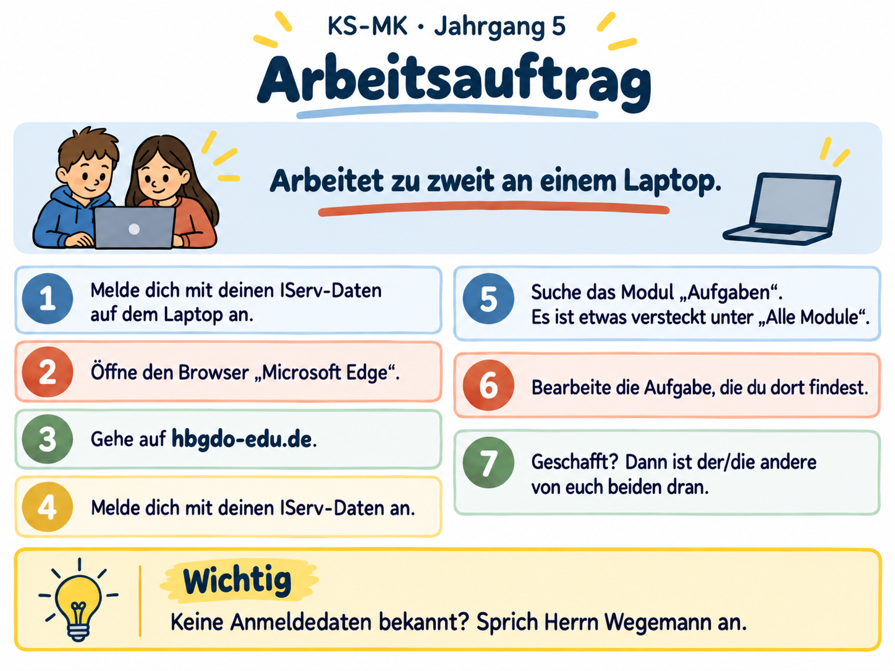

Projektgrundlage
Didaktische Leitlinien, Jahresstruktur, Gerätebedingungen, Module und Produktionsregeln.
SKILL.md öffnenverbindlich
Zentrale Arbeitsoberfläche für Planung, Material, Module und Weiterentwicklung der Klassenstunde Medienkompetenz im gesamten Jahrgang 5.
Didaktische Leitlinien, Jahresstruktur, Gerätebedingungen, Module und Produktionsregeln.
SKILL.md öffnenVierseitiger A5-Lernpass für S0, M1–M7, Wahlmodule und einen kurzen Jahresrückblick.
Lernpass öffnen / druckenEinheitliche Kennzeichnung: KS-MK · Jahrgang 5. Keine Klassenbezeichnung, keine klassenspezifische Identität.
START · TRAINING · PROFI sowie OHNE LAPTOP · LAPTOP KURZ · LAPTOP NÖTIG.
Arbeitsroutine, Lösungsleiter-Anbindung, Laptop-Routine, Partnerrollen, Tagesplanung und Rückblick.
Alle künftigen KS-MK-Dateien werden in diesem Ordner bzw. seinen Unterordnern gepflegt.
Struktur ansehenAktueller Arbeitsauftrag für die KS-MK-Stunde: zu zweit am Laptop anmelden, IServ öffnen und die bereitgestellte Aufgabe bearbeiten.

Bild groß öffnen